De volta a turma de 88
Algumas viagens não são apenas sobre destinos, mas sobre sentimentos, memórias e conexões que ficam marcadas para sempre.
A minha primeira viagem com meu pai foi exatamente assim: inesquecível, emocionante e, acima de tudo, extremamente abençoada.
Saímos de Lages rumo a Mafra para um encontro muito especial — a reunião da primeira turma da Marinha catarinense de 1988. Porém, a jornada começou de forma totalmente inesperada: não sabíamos exatamente onde seria o evento e, para completar, no dia anterior, o celular do meu pai atualizou e perdeu todos os contatos.
Mesmo sem informações e sem rumo definido, seguimos viagem confiando que tudo daria certo. E deu. Foi uma experiência que mostrou que, quando existe propósito e fé, os caminhos se abrem. Acompanhe abaixo como foi essa aventura cheia de histórias, desafios e momentos inesquecíveis.
Ver Galeria 📸publicSaída de Lages
Saímos de Lages às 07:00 da manhã, cheios de expectativa, e chegamos em Mafra por volta das 11:00.
A estrada foi tranquila, e a ansiedade só aumentava conforme nos aproximávamos do destino.
warningPerrengue Chique
E aí vem a melhor parte: como encontramos o local do evento?
Meu pai, com seu instinto de policial, e eu, como uma verdadeira “filha de peixe”, começamos uma verdadeira investigação digital. Procuramos em diversos perfis até encontrar algo que pudesse nos ajudar.
Depois de muito buscar, encontramos o telefone de um corretor imobiliário que estava vinculado a um perfil relacionado à turma de marinheiros de 88.
Ligamos… e BINGO! Ele tinha exatamente o endereço que precisávamos. Foi aquele tipo de situação que vira história pra contar — um verdadeiro “perrengue chique”!
celebration O Evento
O encontro aconteceu na casa de um ex-militar, no centro da cidade de Mafra. Um detalhe curioso foi perceber que muitos dos ex-marinheiros seguiram caminhos diferentes após a Marinha.
Além dos que seguiram carreira militar, como meu pai, havia professores, empresários, mecânicos e músicos.
A tarde foi leve, cheia de risadas, conversas e memórias. Mas o mais emocionante foi ver meu pai ao lado dos seus colegas de farda, revivendo momentos da juventude.
Galeria
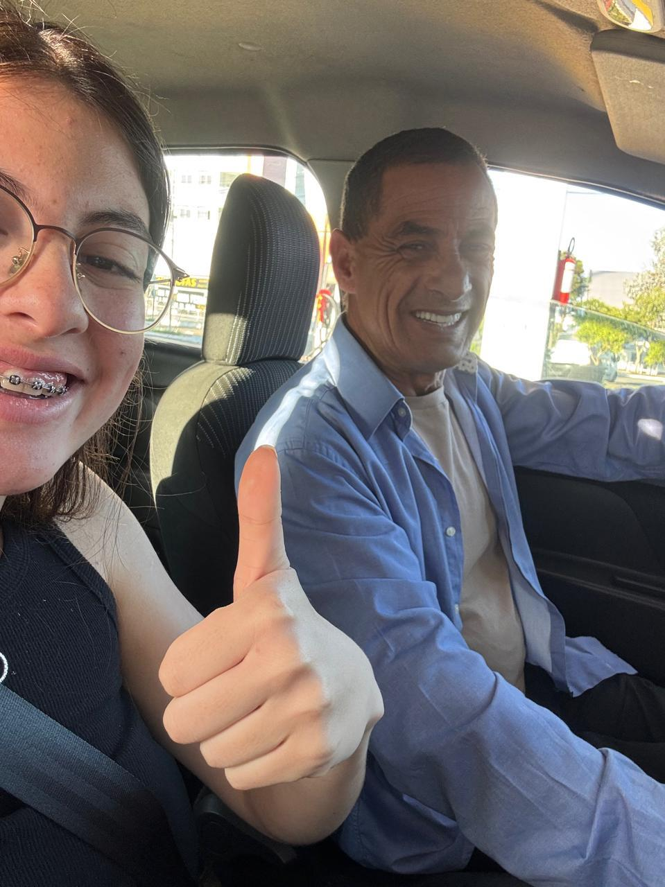
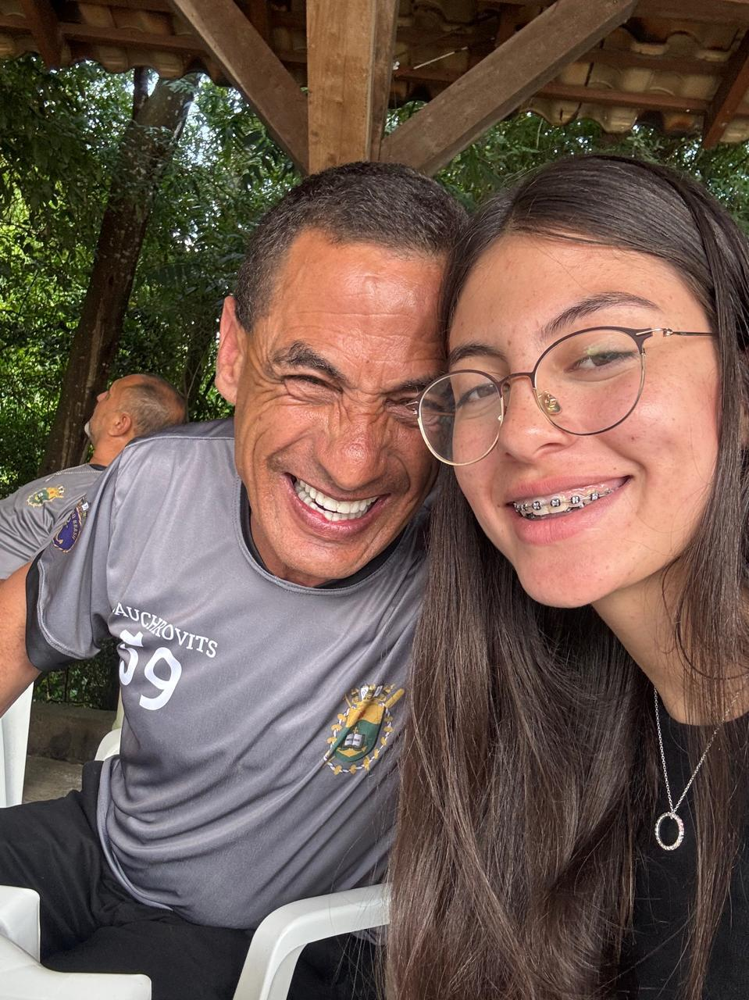
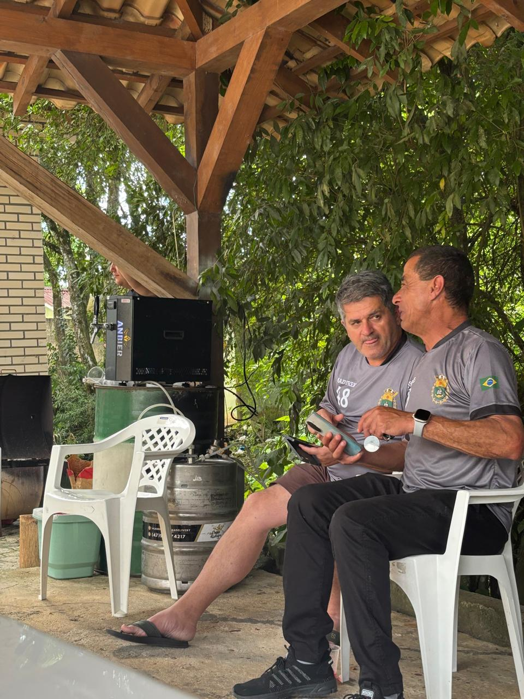
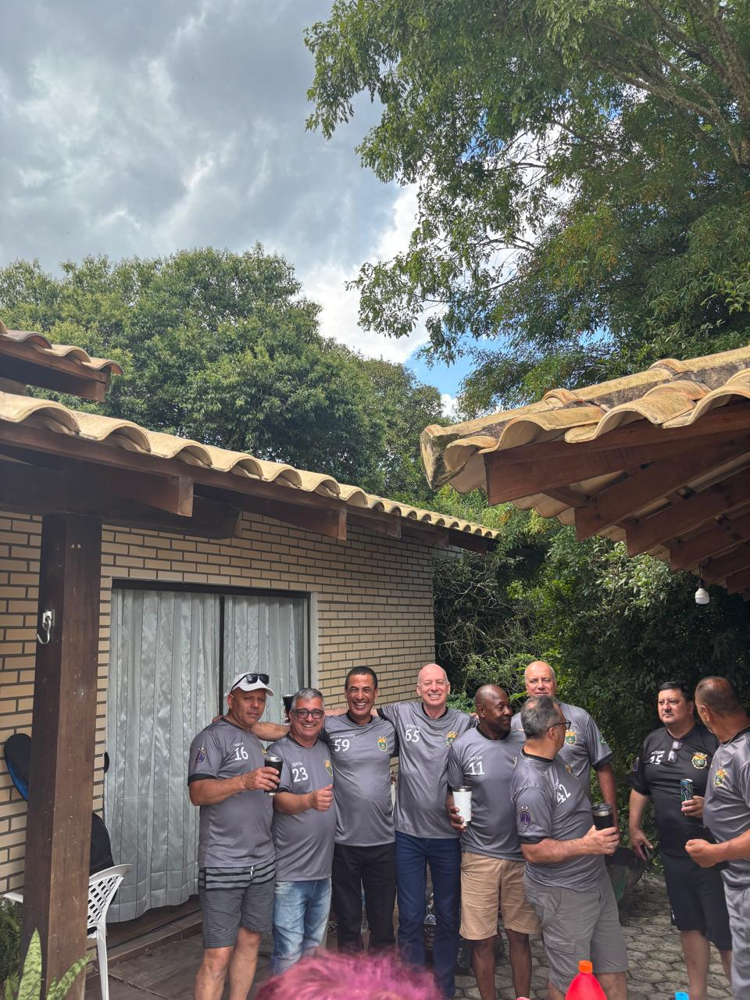
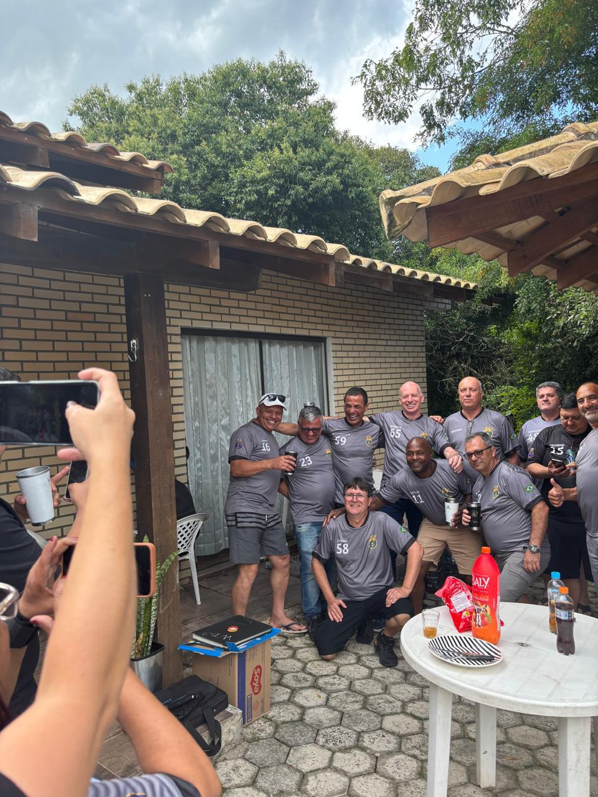
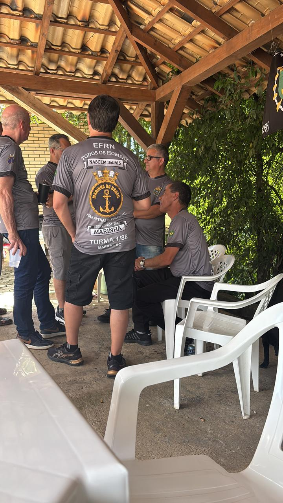
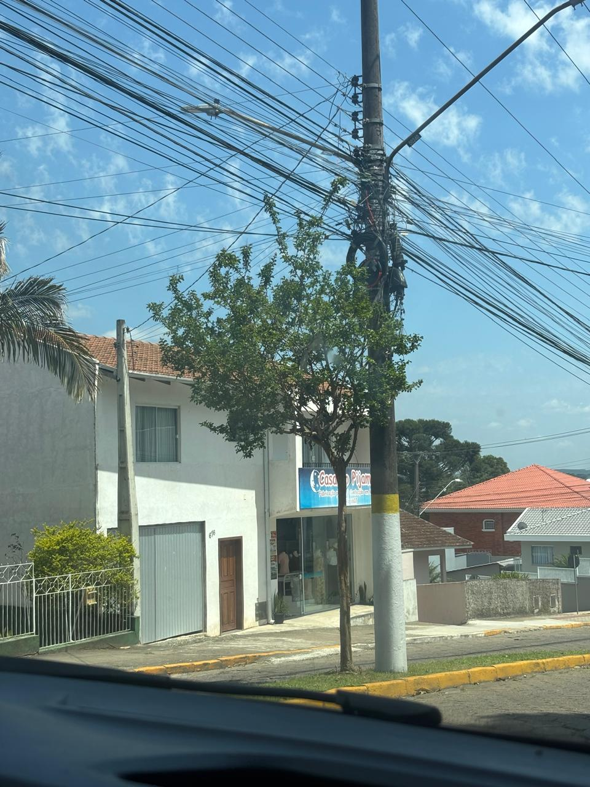
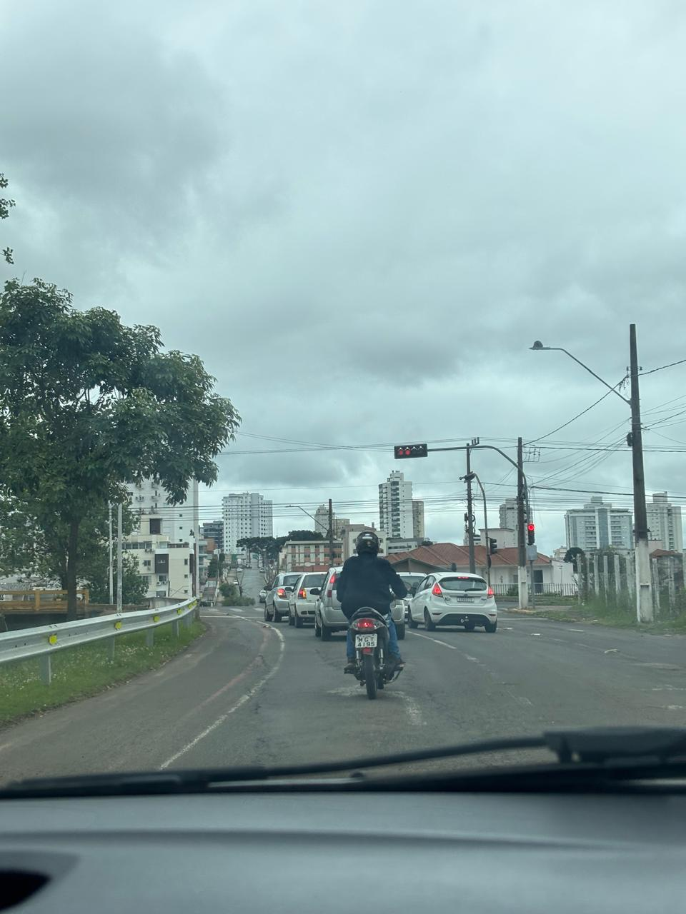
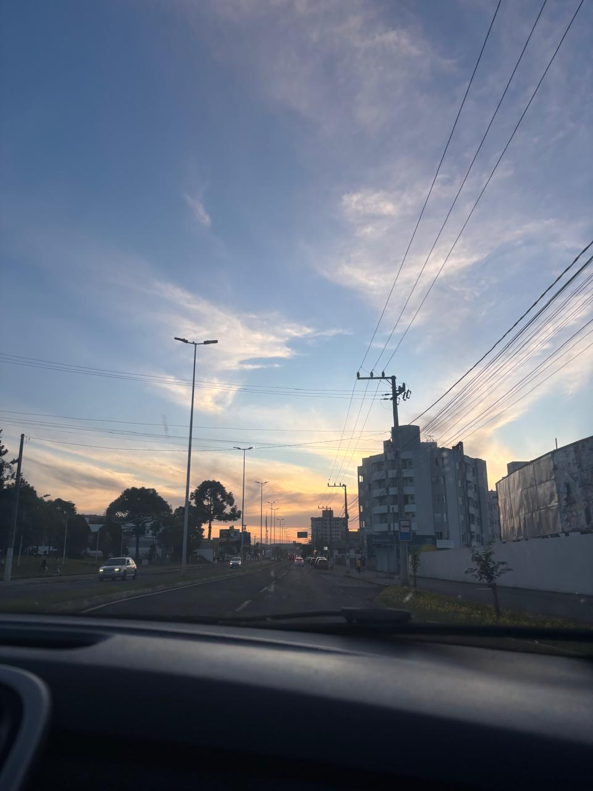
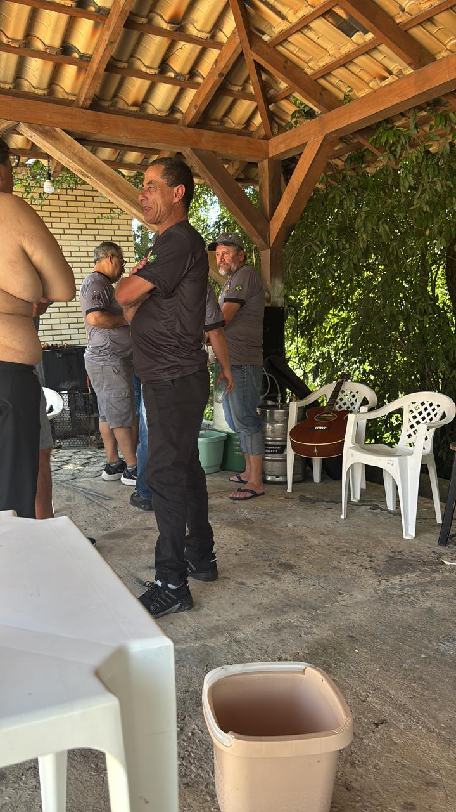

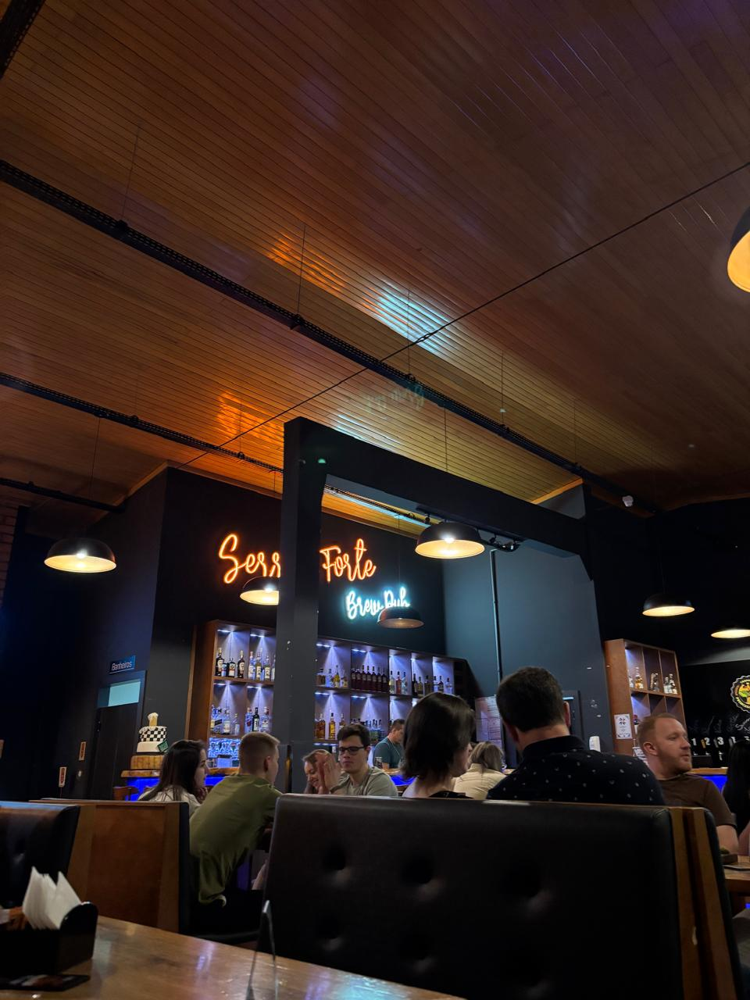
lightbulbDicas
- wb_sunny Leve protetor solar
- checkroom Prefira roupas leves
- schedule Sair cedo evita trânsito
- payments Levar dinheiro trocado
- favorite Aproveite sua família
Saiba mais sobre caixas do sul: Clique aqui
A próxima parada será Caxias do Sul! Ver próxima viagem ✈️